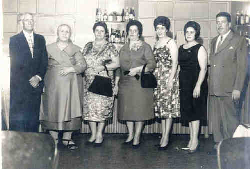
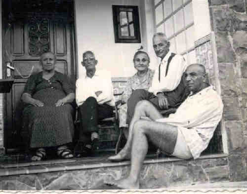
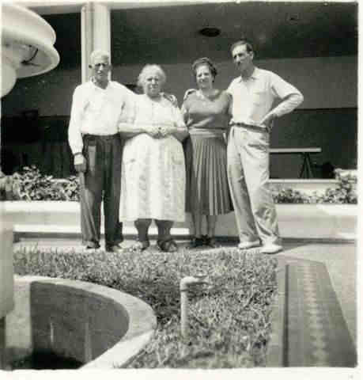

Maria Bonifácio
- Nascida em: 29 Out 1895, Nápoles, Itália
- Casamento: Ercole Petrella em 1915
- Falecido: 18 Jan 1969, São Paulo, Sp com 73 anos de idade

 Notas Gerais: Notas Gerais:
Maria Bonifácio era irmã de Sebastião Bonifácio que casou com Adelina Petrella.
Conforme lembra seu neto Carlos Antônio Natrielli:
"A vovó Maria também foi uma companheira fantástica.
As pessoas iam lá em casa pedir conselho para a vovó Maria. Era uma pessoa que tinha uma seriedade fantástica, muito querida.
O vovô Ercole gostava do vinho e, às vezes, ficava exaltado, principalmente na companhia do tio Nunzio. Ele sozinho tomava o seu vinho. Não era tanto, mas quando estava junto com o Nunzio, parece que a dose era maior, então ele explodia. A minha vó ficava serena, calma, não falava nada porque ele estava um pouco alterado, aí depois de passar a "alteração", ela pegava e falava com ele e sempre ganhava.
Na culinária, a vó Maria era fantástica. A paciência que ela fazia as coisas. A gente vê que ela fazia com amor. Eu aprendi com a vovó a qualidade dos pratos e das comidas e com o vovô Ercole, a ser o observador e palpiteiro:
- Mais assim, mais assado!
Eu lembro a delícia que era o minestrone que a vovó fazia, era batata doce, o macarrão rigatoni, a escarola, o feijão , aquela sopa meio agridoce por causa da batata doce. Aquilo era fantástico.
A polpeta eu aprendi a fazer também.
Eu gosto muito e faço a alichela, a beringela, o pimentão.
Tinha as comidas típicas para cada ocasião: Natal a Páscoa. Então, foi gostoso eu conviver e aprender a viver isso aí da infância."
Eventos notáveis em Sua vida foram:

• fotos: Ercole - vó Maria - Oswaldina - Philomena - Nunciata - Clementina - Roque.

• fotos: vó Maria - vô Ercole - vó Ana - vô Nunzio - sr. Guerino.

• fotos: Ercole - Maria - Philomena - Antônio.
Maria casad[:o::a] Ercole Petrella, filho de Rocco Petrella e Filomena Di Bacco, em 1915. (Ercole Petrella nasceu em em 15 Nov 1889 em Pratola Peligna , L'Aquila, Abruzzo e faleceu em 25 Jul 1964 em São Paulo, Sp.)
|
.jpg "no centro Maria -Ercole (559 KB)
(Clique na Foto para vê-la no Tamanho Original)")